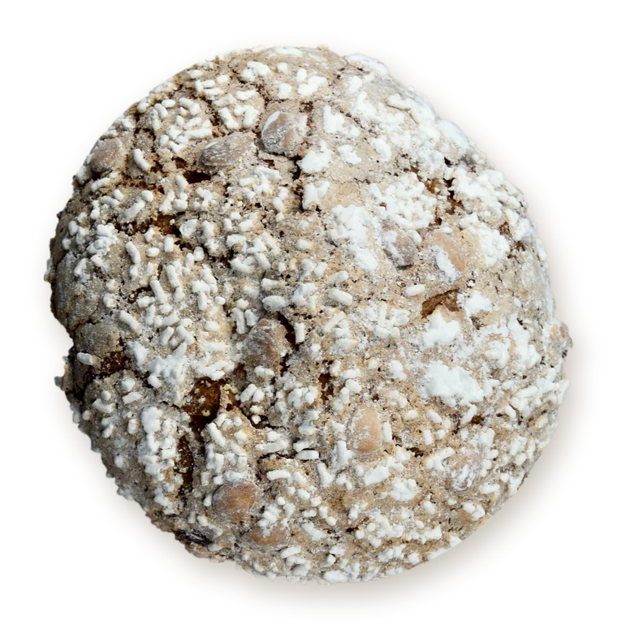
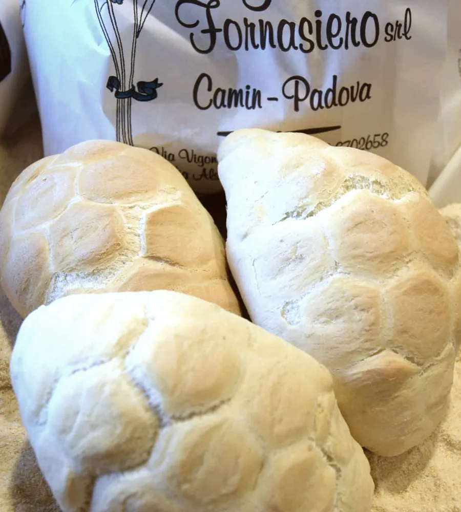

SiamoFornasiero,fornai anchenel nome

Pane, pasta fresca, pizze, focacce e dolci dal nostro laboratorio, a Camin dal 1963.
Aperti dal lunedì al venerdì, mattina e pomeriggio. Il sabato mattina in via Alsazia 3.
Via Vigonovese 116 laboratorio e negozio

Lunedì‑venerdì 8.30‑13.45 e 16.30‑20.00
Mercoledì pomeriggio chiuso. Sabato: chiamate.
Via Alsazia 3 negozio
Lunedì‑venerdì 8.30‑13.45 e 16.30‑19.30
Sabato 8.30‑13.30. Cellulare 338 660 06 64
Natale e Pasqua: panettone, colomba e focacce si prenotano in negozio o al telefono.
Galileo Fornasiero è arrivato a Camin il primo aprile del 1963. Fidalma è al banco da sessant'anni.

- 1928Gli zii Domenico e Pasquale rilevano un forno chiuso a Villatora di Saonara.
- 1963Apre la bottega di via Vigonovese, a pochi metri dal semaforo.
- 2013Alla festa dei cinquant'anni vengono a Camin quattrocento persone.
Il pane di ogni giorno
Oltre 30 tipologie di pane, fatte ogni giorno nel nostro laboratorio di via Vigonovese e portate nei due negozi.
I pani con il nome di casa
- Maggiolini
- Tartaruga
- Ciopeta padovana
- Stivaletto
- Zoccoletto
E ogni giorno
- Pane di tipo 00
- Filoncini di soia
- Pane multicereali
- Spiga al kamut
- Filoncino integrale
- Pane all'olio
- Pane alla zucca
- Pane al riso
- Pane scuro
- Pane alle noci
- Pane ai fichi
- Panino all'uvetta
- Pane in cassetta
- Pane al latte pane arabo e bocconcini
- Pane biscotto bianco, integrale, ai cereali
In tutto sono oltre 30 tipi: per gli altri chiedete al banco.

Pasta fresca, pizze e dolci
Pasta all'uovo
Tagliatelle, tagliolini e bigoli all'uovo, e gli gnocchi.
Pizze, focacce e panini
Margherita, prosciutto e funghi, quattro stagioni, porcini e grana, o con i gusti che chiedete voi. Focacce alle olive, alle cipolle, con patate, rosmarino e mozzarella. Panini imbottiti con gli affettati.
Crostate e torte
Crostate con ciliegie, albicocca, frutti di bosco o crema al limone, con ricotta e cioccolato, con crema di mandorle. Torta alle carote, plumcake allo yogurt, pan di Spagna con le mele. I dolci nuovi li racconta Romina nella sua Bacheca.
A Natale, la ricetta di Galileo
Panettone e focaccia di Natale, con l'antica ricetta di Galileo Fornasiero. A Pasqua colomba e focaccia. Si prenotano in negozio o al telefono, al 049 870 26 58.
Le focacce, dice Fidalma, sono preparate come 50 anni fa
.
Pezzature, prezzi e ultimo giorno utile: chiedete al banco o al telefono.


Per bar, alberghi, ristoranti e rivendite
Siamo specializzati nella fornitura di pane per alberghi, bar, ristoranti e rivendite. Per decenni abbiamo dato il pane a tante aziende della zona, agli operai delle Officine Meccaniche Stanga e della Snia Viscosa.
Anche per le famiglie offriamo consegne a domicilio in zona Camin e dintorni.
Per i locali, chiamate il laboratorio per sapere se arriviamo fino a voi, in che giorni e a che ora.
Il laboratorio, via Vigonovese 116
049 870 26 58Oppure scrivete a
info@panificiogalileofornasiero.it oggetto: Fornitura pane
Non abbandonerei mai Camin, qui è la mia famiglia, il mio mondo, il mio lavoro.
Galileo Fornasiero al Mattino di Padova, dicembre 2013
Laboratorio e negozio, 35127 Camin (Padova)
049 870 26 58- Lunedì‑venerdì
- 8.30‑13.45 e 16.30‑20.00
- Mercoledì
- pomeriggio chiuso
- Sabato e domenica
- chiedete al telefono
Punto vendita, 35127 Camin (Padova)
049 870 51 07 338 660 06 64- Lunedì‑venerdì
- 8.30‑13.45 e 16.30‑19.30
- Sabato
- 8.30‑13.30
- Domenica
- chiedete al telefono